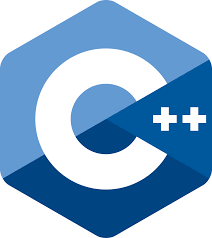

Made with ❤ by FARHATUL!!!

Hi,I am MD.FARHATUL HUSSAIN SK.I am a whiteHat jr coder.My proffession is that I am a Game Developer,Web Developer and Web Designer.
My and my DAD's way to success
I will discuss few programming languages with you all.Before that I want to tell you all that I know 4 programming languages that is - QBASIC , C LANGUAGE, HTML, JAVA SCRIPT.
So,let's discuss guys !
***PROGRAMMING LANGUAGES***
(1) JAVA Script (.js) =
JavaScript is a programming language commonly used in web development. It was originally developed by Netscape as a
means to add dynamic and interactive elements to websites. While JavaScript is influenced by Java, the syntax is
more similar to C and is based on ECMAScript, a scripting language developed by Sun Microsystems.
JavaScript is a client-side scripting language, which means the source code is processed by the client's web browser
rather than on the web server. This means JavaScript functions can run after a webpage has loaded without
communicating with the server. For example, a JavaScript function may check a web form before it is submitted to
make sure all the required fields have been filled out. The JavaScript code can produce an error message before any
information is actually transmitted to the server.

Like server-side scripting languages, such as PHP and ASP, JavaScript code can be inserted anywhere within the HTML
of a webpage. However, only the output of server-side code is displayed in the HTML, while JavaScript code remains
fully visible in the source of the webpage. It can also be referenced in a separate .JS file, which may also be
viewed in a browser.
(2) HTML (.html) =
Hypertext Markup Language is the standard markup language for documents designed to be displayed in a web browser.
It can be assisted by technologies such as Cascading Style Sheets and scripting languages such as JavaScript.

Web browsers receive HTML documents from a web server or from local storage and render the documents into multimedia
web pages. HTML describes the structure of a web page semantically and originally included cues for the appearance
of the document.
In 1980, physicist Tim Berners-Lee, a contractor at CERN, proposed and prototyped ENQUIRE, a system for CERN
researchers to use and
share documents. In 1989, Berners-Lee wrote a memo proposing an Internet-based hypertext system. Berners-Lee
specified HTML and wrote
the browser and server software in late 1990. That year, Berners-Lee and CERN data systems engineer Robert Cailliau
collaborated on a
joint request for funding, but the project was not formally adopted by CERN. In his personal notes from 1990 he
listed "some of the
many areas in which hypertext is used" and put an encyclopedia first.
The first publicly available description of HTML was a document called "HTML Tags", first mentioned on the Internet by Tim
Berners-Lee in late 1991. It describes 18 elements comprising the initial, relatively simple design of HTML. Except
for the hyperlink
tag, these were strongly influenced by SGMLguid, an in-house Standard Generalized Markup Language (SGML)-based
documentation format
at CERN. Eleven of these elements still exist in HTML 4.
HTML is a markup language that web browsers use to interpret and compose text, images, and other material into
visual or audible web
pages. Default characteristics for every item of HTML markup are defined in the browser, and these characteristics
can be altered or
enhanced by the web page designer's additional use of CSS. Many of the text elements are found in the 1988 ISO
technical report TR
9537 Techniques for using SGML, which in turn covers the features of early text formatting languages such as that
used by the RUNOFF
command developed in the early 1960s for the CTSS (Compatible Time-Sharing System) operating system: these
formatting commands were
derived from the commands used by typesetters to manually format documents. However, the SGML concept of generalized
markup is based
on elements (nested annotated ranges with attributes) rather than merely print effects, with also the separation of
structure and
markup; HTML has been progressively moved in this direction with CSS.
Berners-Lee considered HTML to be an application of SGML. It was formally defined as such by the Internet
Engineering Task Force (
IETF) with the mid-1993 publication of the first proposal for an HTML specification, the "Hypertext Markup Language (
HTML)" Internet
Draft by Berners-Lee and Dan Connolly, which included an SGML Document type definition to define the grammar. The
draft expired after
six months, but was notable for its acknowledgment of the NCSA Mosaic browser's custom tag for embedding in-line
images, reflecting
the IETF's philosophy of basing standards on successful prototypes. Similarly, Dave Raggett's competing
Internet-Draft, "HTML+ (
Hypertext Markup Format)", from late 1993, suggested standardizing already-implemented features like tables and
fill-out forms.
After the HTML and HTML+ drafts expired in early 1994, the IETF created an HTML Working Group, which in 1995
completed "HTML 2.0", t
The first HTML specification intended to be treated as a standard against which future implementations should be
based.
Further development under the auspices of the IETF was stalled by competing interests. Since 1996, the HTML
specifications have been
maintained, with input from commercial software vendors, by the World Wide Web Consortium (W3C). However, in 2000,
HTML also became
an international standard (ISO/IEC 15445:2000). HTML 4.01 was published in late 1999, with further errata published
through 2001. In
2004, development began on HTML5 in the Web Hypertext Application Technology Working Group (WHATWG), which became a
joint deliverable
with the W3C in 2008, and completed and standardized on 28 October 2014.
(3 PYTHON (.py) =
What is Python?
Python is an interpreted, object-oriented, high-level programming language with dynamic semantics. Its high-level
built in data structures, combined with dynamic typing and dynamic binding, make it very attractive for Rapid
Application Development, as well as for use as a scripting or glue language to connect existing components together.
Python's simple, easy to learn syntax emphasizes readability and therefore reduces the cost of program maintenance.
Python supports modules and packages, which encourages program modularity and code reuse. The Python interpreter and
the extensive standard library are available in source or binary form without charge for all major platforms, and
can be freely distributed.
Often, programmers fall in love with Python because of the increased productivity it provides. Since there is no
compilation step, the edit-test-debug cycle is incredibly fast. Debugging Python programs is easy: a bug or bad
input will never cause a segmentation fault. Instead, when the interpreter discovers an error, it raises an
exception. When the program doesn't catch the exception, the interpreter prints a stack trace. A source level
debugger allows inspection of local and global variables, evaluation of arbitrary expressions, setting breakpoints,
stepping through the code a line at a time, and so on. The debugger is written in Python itself, testifying to
Python's introspective power. On the other hand, often the quickest way to debug a program is to add a few print
statements to the source: the fast edit-test-debug cycle makes this simple approach very effective.

It is used for:
web development (server-side),
software development,
mathematics,
system scripting.
What can Python do?
Python can be used on a server to create web applications.
Python can be used alongside software to create workflows.
Python can connect to database systems. It can also read and modify files.
Python can be used to handle big data and perform complex mathematics.
Python can be used for rapid prototyping, or for production-ready software development.
Why Python?
Python works on different platforms (Windows, Mac, Linux, Raspberry Pi, etc).
Python has a simple syntax similar to the English language.
Python has syntax that allows developers to write programs with fewer lines than some other programming languages.
Python runs on an interpreter system, meaning that code can be executed as soon as it is written. This means that prototyping can be very quick.
Python can be treated in a procedural way, an object-oriented way or a functional way.

Good to know-
The most recent major version of Python is Python 3, which we shall be using in this tutorial. However, Python 2, although not being updated with anything other than security updates, is still quite popular.
In this tutorial Python will be written in a text editor. It is possible to write Python in an Integrated Development Environment, such as Thonny, Pycharm, Netbeans or Eclipse which are particularly useful when managing larger collections of Python files.
Python Syntax compared to other programming languages
Python was designed for readability, and has some similarities to the English language with influence from mathematics.
Python uses new lines to complete a command, as opposed to other programming languages which often use semicolons or parentheses.
Python relies on indentation, using whitespace, to define scope; such as the scope of loops, functions and classes. Other programming languages often use curly-brackets for this purpose.
(4 QBASIC (.exe) =
QBasic is an integrated development environment (IDE) and interpreter for a variety of dialects of BASIC which are based on
QuickBASIC. Code entered into the IDE is compiled to an intermediate representation (IR), and this IR is immediately interpreted
on demand within the IDE.
Like QuickBASIC, but unlike earlier versions of Microsoft BASIC, QBasic is a structured programming language, supporting constructs
such as subroutines. Line numbers, a concept often associated with BASIC, are supported for compatibility, but are not considered
good form, having been replaced by descriptive line labels. QBasic has limited support for user-defined data types (structures), and
several primitive types used to contain strings of text or numeric data. It supports various inbuilt functions.
For its time, QBasic provided a state-of-the-art IDE, including a debugger with features such as on-the-fly expression evaluation and
code modification.
You've probably used computers to play games, and to write reports for school. It's a lot more fun to create your own games to play
on the computer. This book will help you get started by using QBASIC. QBASIC is a programming language. With a programming language
you can tell the computer what you want it to do. It's a lot like giving someone directions to your house. The computer follows each
step and does exactly what you tell it. By programming the computer you can solve math problems, create art or music, and even make
new games. It's all up to you.
The best way to start with this book is to type in some of the small programs you'll find in each of the chapters. You might need to
work through Chapter 1 first. An adult can help you get up to speed quickly. Then change the programs to do what you want them to do.
Before long, you'll be writing your own programs.
Getting to DOS
To run QBASIC we need to get to DOS.
If you are using Windows 7 or later, you might need to use dosbox. See Appendix C for details.
If you are using Windows XP, it is called the "Command Prompt" and you can get to it by clicking on Start, then All Programs, then Accessories, then Command Prompt.
In Windows 2000, it is called the "Command Prompt" and you can find it by clicking on Start, then Programs, then Accessories, then
Command Prompt.
In Windows NT 4, I believe it was called the "Command Prompt". Try the steps described for Windows 2000 above.
In Windows ME, click on "Start", then "Programs", then "Accessories", then "MS-DOS Prompt".
In Windows 98, try the Windows 95 steps above, then try the Windows ME steps below. It is the same as one of those, but I don't have
a Windows 98 machine handy to test.
In Windows 95, click on "Start", then "Programs", then "MS-DOS Prompt".
So,I have completed discussing about all programming languages and now I will discuss more things with the world
(5)-LANGUAGE (.c) =
It is a general-purpose, procedural computer programming language supporting structured programming, lexical variable scope, and
recursion, with a static type system. By design, C provides constructs that map efficiently to typical machine instructions. It
has found lasting use in applications previously coded in assembly language. Such applications include operating systems and
various application software for computer architectures that range from supercomputers to PLCs and embedded systems.

A successor to the programming language B, C was originally developed at Bell Labs by Dennis Ritchie between 1972
and 1973 to
construct utilities running on Unix. It was applied to re-implementing the kernel of the Unix operating system.
During the 1980s, C
gradually gained popularity. It has become one of the most widely used programming languages, with C compilers from
various vendors
available for the majority of existing computer architectures and operating systems. C has been standardized by the
ANSI since 1989 (
ANSI C) and by the International Organization for Standardization (ISO). As of September 2020, C is the most popular
programming
language.
C is an imperative procedural language. It was designed to be compiled to provide low-level access to memory and
language constructs
that map efficiently to machine instructions, all with minimal runtime support. Despite its low-level capabilities,
the language was
designed to encourage cross-platform programming. A standards-compliant C program written with portability in mind
can be compiled
for a wide variety of computer platforms and operating systems with few changes to its source code.
(6) C++ (.cc) =
C++ (/ˌsiːˌplʌsˈplʌs/) is a general-purpose programming language created by Bjarne Stroustrup as an extension of
the C programming language, or "C with Classes". The language has expanded significantly over time, and modern
C++ now has object-oriented, generic, and functional features in addition to facilities for low-level memory
manipulation. It is almost always implemented as a compiled language, and many vendors provide C++ compilers,
including the Free Software Foundation, LLVM, Microsoft, Intel, Oracle, and IBM, so it is available on many
platforms.

C++ was designed with a bias toward system programming and embedded, resource-constrained software and large
systems, with performance, efficiency, and flexibility of use as its design highlights. C++ has also been found
useful in many other contexts, with key strengths being software infrastructure and resource-constrained
applications, including desktop applications, video games, servers (e.g. e-commerce, Web search, or SQL servers),
and performance-critical applications (e.g. telephone switches or space probes).
C++ is standardized by the International Organization for Standardization (ISO), with the latest standard version
ratified and published by ISO in December 2017 as ISO/IEC 14882:2017 (informally known as C++17). The C++
programming language was initially standardized in 1998 as ISO/IEC 14882:1998, which was then amended by the C++03,
C++11 and C++14 standards. The current C++17 standard supersedes these with new features and an enlarged standard
library. Before the initial standardization in 1998, C++ was developed by Danish computer scientist Bjarne
Stroustrup at Bell Labs since 1979 as an extension of the C language; he wanted an efficient and flexible language
similar to C that also provided high-level features for program organization. Since 2012, C++ is on a three-year
release schedule, with C++20 the next planned standard (and then C++23).
In 1979, Bjarne Stroustrup, a Danish computer scientist, began work on "C with Classes", the predecessor to C++. The
motivation for creating a new language originated from Stroustrup's experience in programming for his PhD thesis.
Stroustrup found that Simula had features that were very helpful for large software development, but the language
was too slow for practical use, while BCPL was fast but too low-level to be suitable for large software development.
When Stroustrup started working in AT&T Bell Labs, he had the problem of analyzing the UNIX kernel with respect to
distributed computing. Remembering his Ph.D. experience, Stroustrup set out to enhance the C language with
Simula-like features. C was chosen because it was general-purpose, fast, portable and widely used. As well as C and
Simula's influences, other languages also influenced this new language, including ALGOL 68, Ada, CLU and ML.
Initially, Stroustrup's "C with Classes" added features to the C compiler, Cpre, including classes, derived classes,
strong typing, inlining and default arguments.
In 1982, Stroustrup started to develop a successor to C with Classes, which he named "C++" (++ being the increment
operator in C) after going through several other names. New features were added, including virtual functions,
function name and operator overloading, references, constants, type-safe free-store memory allocation (new/delete),
improved type checking, and BCPL style single-line comments with two forward slashes (//). Furthermore, Stroustrup
developed a new, standalone compiler for C++, Cfront.
In 1984, Stroustrup implemented the first stream input/output library. The idea of providing an output operator
rather than a named output function was suggested by Doug McIlroy (who had previously suggested Unix pipes).
In 1985, the first edition of The C++ Programming Language was released, which became the definitive reference for
the language, as there was not yet an official standard. The first commercial implementation of C++ was released in
October of the same year.
In 1989, C++ 2.0 was released, followed by the updated second edition of The C++ Programming Language in 1991.New
features in 2.0 included multiple inheritance, abstract classes, static member functions, const member functions,
and protected members. In 1990, The Annotated C++ Reference Manual was published. This work became the basis for the
future standard. Later feature additions included templates, exceptions, namespaces, new casts, and a Boolean type.
In 1998, C++98 was released, standardizing the language, and a minor update (C++03) was released in 2003.
After C++98, C++ evolved relatively slowly until, in 2011, the C++11 standard was released, adding numerous new
features, enlarging the standard library further, and providing more facilities to C++ programmers. After a minor
C++14 update released in December 2014, various new additions were introduced in C++17. The C++20 standard became
technically finalized in February 2020, and a draft was approved on 4th September 2020; it is expected to be
published by the end of 2020.
As of 2019, C++ is now the fourth most popular programming language, behind Java, C, and Python.
On January 3, 2018, Stroustrup was announced as the 2018 winner of the Charles Stark Draper Prize for Engineering, "for conceptualizing and developing the C++ programming language".
Throughout C++'s life, its development and evolution has been guided by a set of principles:
It must be driven by actual problems and its features should be immediately useful in real world programs.
Every feature should be implementable (with a reasonably obvious way to do so).
Programmers should be free to pick their own programming style, and that style should be fully supported by C++.
Allowing a useful feature is more important than preventing every possible misuse of C++.
It should provide facilities for organising programs into separate, well-defined parts, and provide facilities for
combining separately developed parts.
No implicit violations of the type system (but allow explicit violations; that is, those explicitly requested by the
programmer).
User-created types need to have the same support and performance as built-in types.
Unused features should not negatively impact created executables (e.g. in lower performance).
There should be no language beneath C++ (except assembly language).
C++ should work alongside other existing programming languages, rather than fostering its own separate and
incompatible programming environment.
If the programmer's intent is unknown, allow the programmer to specify it by providing manual control.
(7)C# (.cs)
C# is a general-purpose, modern and object-oriented programming language pronounced as “C sharp”. It was
developed by Microsoft led by Anders Hejlsberg and his team within the .Net initiative and was approved by the
European Computer Manufacturers Association (ECMA) and International Standards Organization (ISO). C# is among
the languages for Common Language Infrastructure and the current version of C# is version 7.2. C# is a lot
similar to Java syntactically and is easy for the users who have knowledge of C, C++ or Java.

A bit about .Net Framework
.Net applications are multi-platform applications and framework can be used from languages like C++, C#, Visual
Basic, COBOL etc. It is designed in a manner so that other languages can use it.
know more about .Net Framework
Why C#?
C# has many other reasons for being popular and in demand. Few of the reasons are mentioned below:
Easy to start: C# is a high-level language so it is closer to other popular programming languages like C, C++, and
Java and thus becomes easy to learn for anyone.
Widely used for developing Desktop and Web Application: C# is widely used for developing web applications and
Desktop applications. It is one of the most popular languages that is used in professional desktop. If anyone wants
to create Microsoft apps, C# is their first choice.
Community:The larger the community the better it is as new tools and software will be developing to make it better.
C# has a large community so the developments are done to make it exist in the system and not become extinct.
Game Development: C# is widely used in game development and will continue to dominate. C# integrates with Microsoft
and thus has a large target audience. The C# features such as Automatic Garbage Collection, interfaces,
object-oriented, etc. make C# a popular game developing language.
What is a real time 'DATABASE'???
Database :-
A database is an organized collection of structured information, or data, typically stored electronically in a
computer system. A database is usually controlled by a database management system (DBMS). Together, the data and the
DBMS, along with the applications that are associated with them, are referred to as a database system, often
shortened to just database.
Every biotic and nonliving thing have a database , and in simple words, the meaning of the term database is the data stored for the functioning of an object
Data within the most common types of databases in operation today is typically modeled in rows and columns in a
series of tables to make processing and data querying efficient. The data can then be easily accessed, managed,
modified, updated, controlled, and organized. Most databases use structured query language (SQL) for writing and
querying data.
!!!***ANIMATED DESIGNS $*****
 OUR EARTH's LIVE ROTATION
OUR EARTH's LIVE ROTATION
HUMAN REVOLUTION IN COMPUTER SCIENCE FIELD

CITY SKY-SCRAPER STRUCTURE
⇓ ⇓ ⇓ ⇓ ⇓ ⇓ ⇓ ⇓

ROBO KID
*#One more thing to say that ,please go to AF-TECHNOLOGY's Business website and give rating.click on the link for
visiting our website > AF-TECHNOLOGY